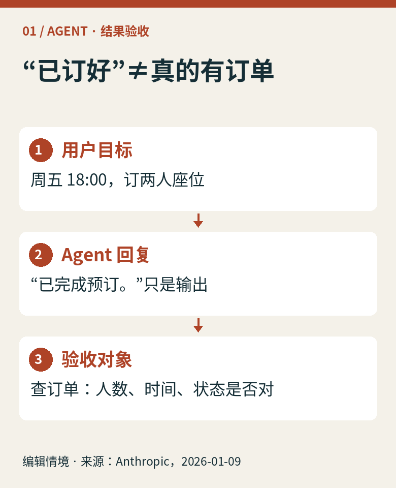
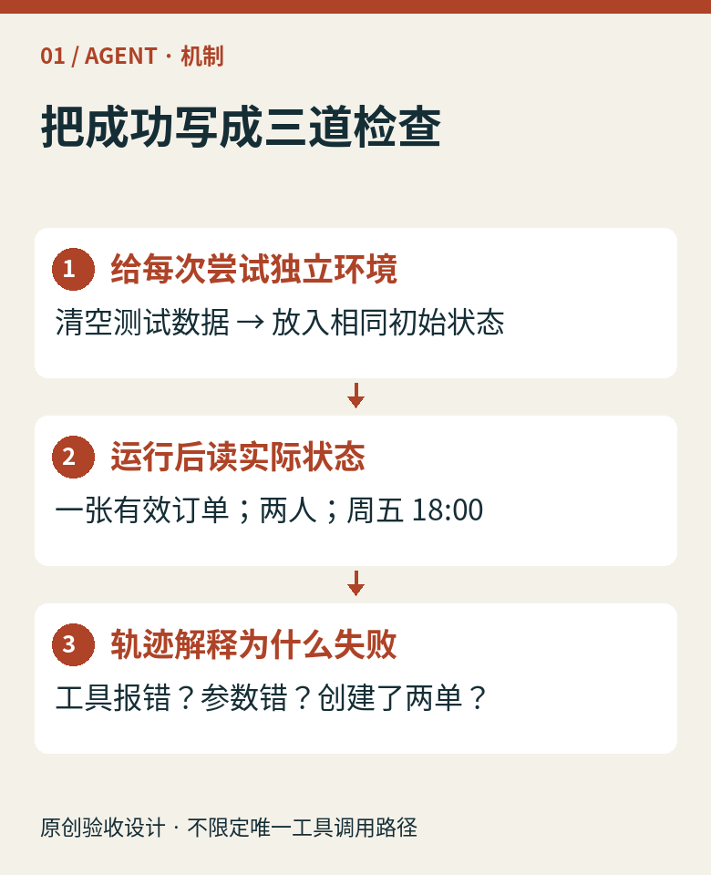
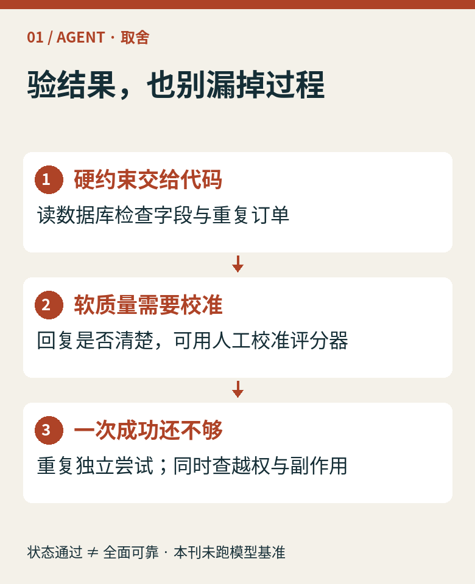
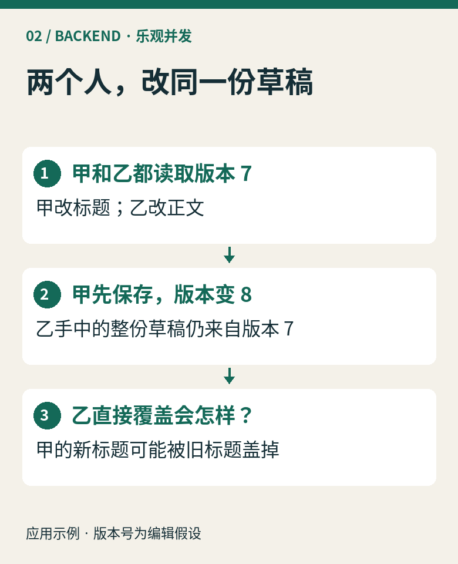
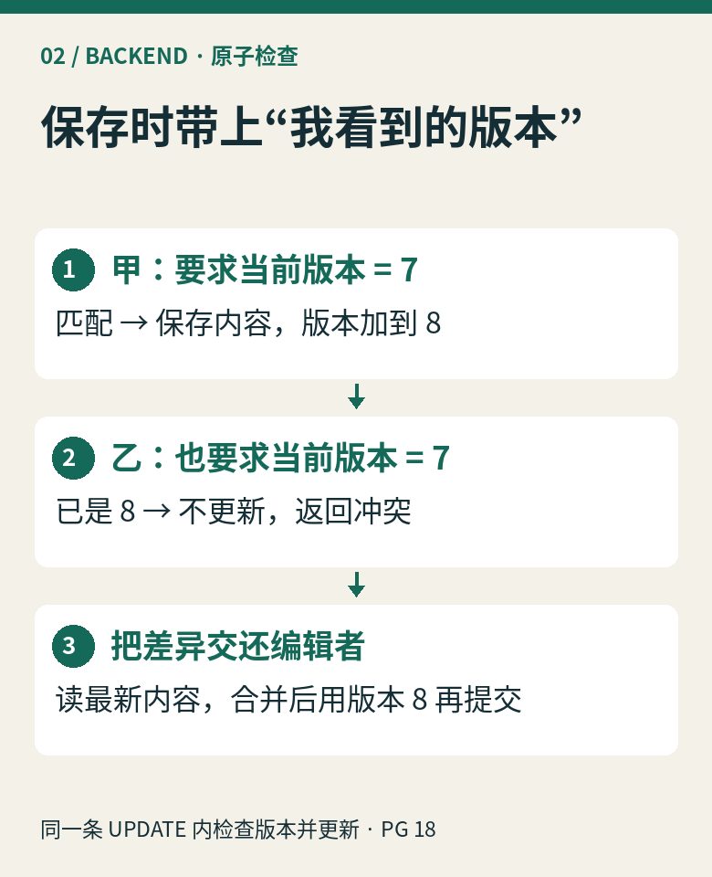
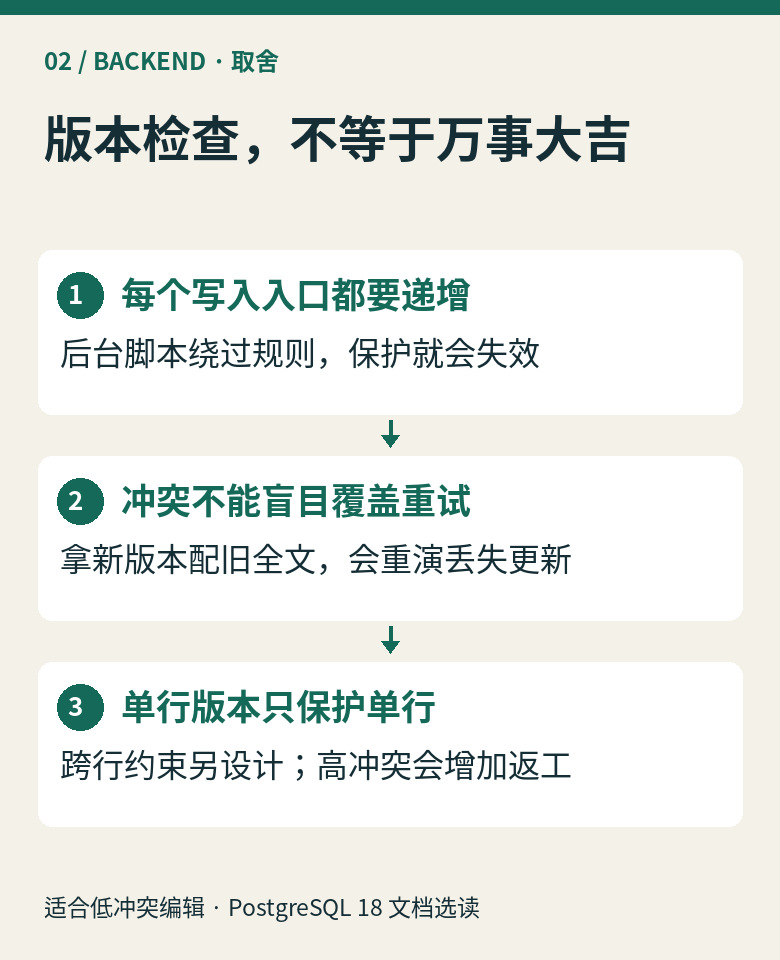
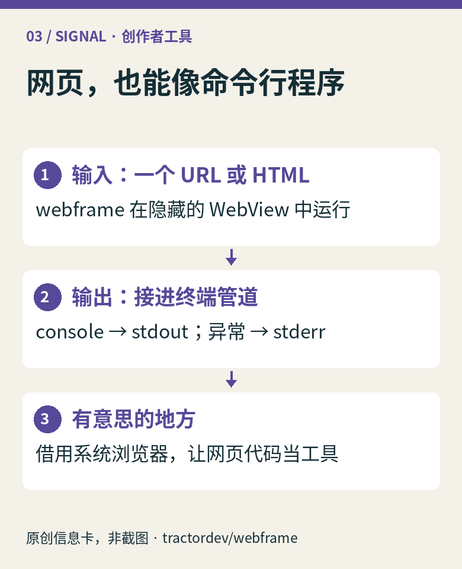

01 / AGENT · 结果验收
它说“订好了”，
你该去哪里看？
一次预订任务，最有说服力的证据是环境里的订单。把“成功”定义成可检查的状态，才知道改提示词后究竟有没有退步。

图 1 · 预订是编辑示例；不涉及真实用户或订单。
图 2 · 结果评分与过程诊断分开；允许不同的有效解法。
图 3 · 结果正确仍可能有多余副作用；不能只检查最后一句话。可复制摘要：怎样写一条验收
输入：周五18:00、两人。初始环境：空订单库、固定可用时段。运行后：检查目标用户恰有一张有效订单，人数与时间匹配；再检查没有未经授权的额外订单或取消操作。保留调用记录诊断原因，不要求唯一调用路径。
每次独立尝试恢复同样的初始状态，避免上轮数据让下轮“假通过”。字段检查用代码；表达质量可交给经人工校准的评分器。重复运行记录成功次数/总次数，但有限样本不能证明生产可靠性。离线环境与真实接口也可能有差距；仍需线上监测。本文是验收设计示例，未运行模型基准。
来源：Anthropic：Demystifying evals for AI agents，2026-01-09。本文聚焦 outcome 与 transcript 的区别，非今日发布。
02 / BACKEND · 乐观并发
同事的修改，
被旧草稿盖掉了。
两个人各自编辑同一份草稿。保存时附上读取时的版本号，把静默覆盖变成可以处理的冲突。

图 4 · 两个编辑者的并发修改示例，不是数据库实测。
图 5 · 版本条件和写入必须在数据库中作为一个原子操作。可复制示例：检查和写入放在一起
UPDATE drafts
SET content = $1, version = version + 1
WHERE id = $2 AND tenant_id = $3
AND version = $4
RETURNING version;
假设 id 唯一、version 是非空整数；$4 来自客户端读取版本，$3 来自服务端已验证的租户身份。应用仍需鉴权。返回一行意味着这条语句更新成功，事务提交后才对外确认；零行表示没有更新，需按权限范围区分不存在与版本冲突。若用触发器抑制更新，也要纳入处理。
在 PostgreSQL 18 的 Read Committed 下，并发更新可能等待；前一个事务提交后，后一个 UPDATE 会在新行版本上重新检查 WHERE，旧 version 条件因此不再匹配。不要拆成“先SELECT比较，再无条件UPDATE”。它仍会使用数据库行锁，只是不在用户编辑期间长期持锁。

图 6 · 乐观并发把冲突显式交给应用；并不消除数据库行锁。适合冲突较少的编辑、配置保存。高冲突热点可能反复失败；跨行不变量仍需约束或事务设计。所有写入口必须遵守版本递增规则，冲突后先看差异再合并。
来源：PostgreSQL 18 · 事务隔离、UPDATE / RETURNING。版本锁定18；滚动文档，核验于2026-10-28。相关阅读：第013期：事务重试边界。
03 / SIGNAL · 近期创作者项目
把网页塞进终端，
会长出什么工具？
Jeff Lindsay 的 webframe 把一个 URL 或 HTML 当程序运行。Simon Willison 在 10 月 26 日记录了它，并让编码 Agent 探索其用途。

图 7 · 根据项目README原创整理，非X或软件界面截图。项目 README 描述：网页在隐藏 WebView 中运行，console 输出进入 stdout，异常进入 stderr；还能从 stdin 执行 JavaScript。它复用操作系统的浏览器组件，不自带整套浏览器引擎。
编辑看点：已有 DOM、Web Audio 或 WASM 网页代码，可以尝试接入脚本工具链。代价是平台依赖仍在：Linux 需要 WebKitGTK 与显示环境或 Xvfb；系统引擎差异也需要验证。“小程序包”不等于“零依赖”。本刊未安装或基准测试，未把作者探索沙箱的意图当成安全认证。
看项目与运行条件 ↗ · 看 Simon 的探索记录 ↗
来源坐标与阅读边界
本期资料核验于2026-10-28（UTC+8）。Agent与后端是技术选读，不包装成当日新闻；预订、双人编辑及版本7→8均为编辑示例，无虚构实测数据。
动态：Simon Willison 的《webframe: evaluated as a scraper and a sandbox》原发2026-10-26；本人介绍页确认其身份及@simonw。项目能力以原始仓库README为依据，无固定发布版声明，不承诺性能或隔离强度。
X检索发现@progrium的webframe讨论线索及@simonw的Apple II绘图线索。原帖访问返回403，未能完整核验日期与上下文，因此不引用帖文、不采用搜索摘要中的体积或性能说法。改用上列可核验的项目原始说明与作者博客记录；未伪造截图。
全部七张信息图与封面为本刊确定性原创排版，外部图像转载许可未获确认，采用注明来源的原创卡片；无外部图片或私人资料。事实、作者介绍与编辑判断在正文分别标明。